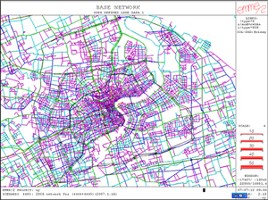
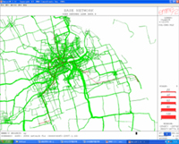

上海市现状网络模型建立简介 ( 2008年04月07日 )
上海市现状网络模型建立简介</STRONG>
完成时间：2007年5月</P>

一、网络建立的依据
1、道路网
现状路网是在原有EMME2路网（大调查997小区）基础上，保留中心城，郊区全部铲掉，郊区再按大调查时测绘院提供的电子地图重新加。在此基础上，全市路网再根据上海市测绘院编制的2006年总1版《上海道路交通指南》上一张一张修改的。<BR>2、公交网
现状公交网是按2006年4月份从“上海城市交通信息中心”拿到的公交线网资料加的；运营组织也是按“上海城市交通信息中心”给的数据库里计算出来的。<BR>3、轨道网
根据实际轨道运行的线路；运营组织也是按实际的情况修改的。<BR>二、网络建立的原则
1、道路网
首先针对节点：将原来节点号到处乱飞的状况作了整理，将节点号按大区进行归类，节点号的前两位为大区码，一般看到节点号就八九不离十知道它在哪个位置，这样便于管理，也便于查错。<BR>然后针对路段：路段上一层层做标识，先建立基础层，如：交通大区、速度分区、道路等级、板块形式、交通管理信息等，在这些基础层建完之后，通过编制一系列宏产生生成层，如：五个地带、行政区、绿信比、VDF、模式等。</P>
|
|
Zone(个) |
Node(个) |
Link(条) |
道路长度(公里) |
车道公里(公里) |
平均车道数</P> |
| 全市 |
1059 |
19832 |
60929 |
13010 |
32820 |
2.5 |
2、公交网

市区里的线路，基本上站点按实际站点加的；市区到郊区的线路，市区段站点按实际站点加，而郊区段基本上通过的每个node都为站点；郊区到郊区的线路，基本上通过的每个node都为站点。<BR> 至2005年底全市应为940条公交线路，而emme2路网上只有865条公交线，还有75条没进路网，是由于路网的修改而导至公交线进不了路网，打算下一步拿到新的公交线网时一起调整。</P>
| 线网长度（公里） |
4074.194 |
| 线路条数（条）</P> |
865 |
| 线路总长度（公里）</P> |
18016.01 |
3、轨道网
根据现状运营情况，将1号线分了2个交路，交路1从莘庄站-共富新村站，交路2从莘庄站-上海火车站。</P>
| 线路 |
区间 |
运营线路长（公里）</P> |
运营线网长（公里）</P> |
| 1号线 |
莘庄站-共富新村站</P> |
32.7 |
32.7 |
| 2号线 |
张江高科站-中山公园站</P> |
18.43 |
18.43 |
| 3号线 |
上海南站-江湾镇站 |
24.54 |
24.54 |
| 4号线 |
大木桥路站-蓝村路站 |
26.54 |
14.99 |
| 5号线 |
莘庄站-闵行开发区站</P> |
16.65 |
16.65 |
| 磁悬浮</P> |
龙阳路站-浦东机场 |
29.11 |
29.11 |
| 合计 |
|
147.97 |
136.42 |


地址：上海市静安区铜仁路331号11楼 邮编：200040 Web:site:www.scctpi.sh.cn
电话：（021）62477711 62890464 传真：（021）62472386 62892787
 沪ICP备11003425号-4
沪ICP备11003425号-4